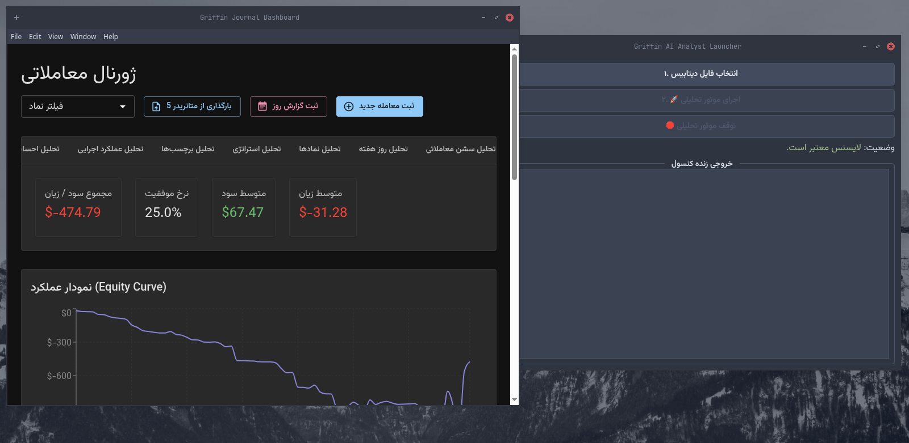

فراتر از یک ژورنال معاملاتی، آینه هوشمند شما
با Griffin، دادههای خام معاملاتی خود را به استراتژیهای برنده تبدیل کنید. الگوهای پنهان را کشف کرده، نقاط ضعف روانشناسی خود را بشناسید و با اطمینان بیشتری معامله کنید.

با Griffin، دادههای خام معاملاتی خود را به استراتژیهای برنده تبدیل کنید. الگوهای پنهان را کشف کرده، نقاط ضعف روانشناسی خود را بشناسید و با اطمینان بیشتری معامله کنید.
گریفین همه چیز را از ثبت ساده معاملات تا تحلیلهای عمیق مبتنی بر هوش مصنوعی پوشش میدهد.
وارد کردن خودکار معاملات از متاتریدر 5، ثبت دستی، افزودن یادداشت، برچسب، استراتژی و حتی ضمیمه کردن تصاویر چارت برای هر معامله.
با استفاده از الگوریتمهای Machine Learning، الگوهای سودآور و زیانده خود را کشف کنید، تأثیر روانشناسی بر عملکردتان را بسنجید و کلمات کلیدی موفقیت را بیابید.
نمودار Equity Curve، نقشه حرارتی معاملات و دهها نمودار تحلیلی بر اساس نماد، استراتژی، احساسات، روز هفته، سشن معاملاتی و امتیاز اجرایی.
هر روز وضعیت ذهنی، میزان تمرکز، پایبندی به قوانین و درسهای آموخته شده را ثبت کنید تا ارتباط مستقیم بین ذهنیت و نتایج خود را مشاهده نمایید.
بررسی کنید که "چه میشد اگر حد سودها را 20% افزایش میدادم؟" یا "چه میشد اگر معاملات هیجانی را انجام نمیدادم؟" و تأثیر آن را بر کارنامه خود ببینید.
موتور تحلیلی قدرتمند با الگوریتمهای هوش مصنوعی رابط کاربری مدرن و واکنشگرا و عملکرد سریع و نیتیو به لطف فریمورک مدرن.
به سادگی تاریخچه معاملات خود را از متاتریدر 5 وارد کنید یا معاملات جدید را به صورت دستی و با جزئیات کامل ثبت نمایید.
اجازه دهید دستیار هوشمند گریفین دادههای شما را پردازش کرده و الگوها، همبستگیها و نقاط قابل بهبود را برای شما آشکار سازد.
از گزارشهای دقیق و قابل فهم گریفین برای اصلاح استراتژی، کنترل احساسات و تصمیمگیریهای هوشمندانهتر در آینده استفاده کنید.
دستیار هوشمند گریفین فقط دادهها را نمایش نمیدهد، بلکه آنها را برای شما "ترجمه" میکند. این سیستم با تحلیل چندبعدی، به سوالاتی پاسخ میدهد که شاید هرگز به فکرتان نرسیده باشد:
کنترل کامل عملکرد معاملاتی خود را به دست بگیرید و با دیدی جدید به بازار نگاه کنید.